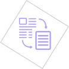

The following is a list of tips and guidelines to help you prepare a
dynamic resume that can help get your
foot in the door and propel
you to a career with greater possibilities and rewards.
GOOD luck.
We look forward to hearing from you.
Determine your objective
Clearly understand what you want in yourcareer and take the time to form a clear and obtainable objective.Also understand what skills
and experience is needed to do well in a particular position.You can structure the content of your resume
around that objective.
Be clear and concise
You want us to be interested enough to contact you for an interview. Simply put yourself in the shoes of the resume reader - what would you be looking for in a candidate?
Use bulleted sentences
Resumes are read quickly so key phrases should stand out. Bulleting information will help us view your accomplishments at a glance-you can go into the details during the interview.
Use active language
Words like prepared, managed, developed, monitored, and presented make your resume stand out and make us recognize you are an energetic and enthusiastic candidate who makes things happen.
Highlight your strengths
Put the strong and most relevant points first. This is your hook for the reader, the rest of your resume reels them in.

Match our need
Review job descriptions on our site and match prevalent words to the bullet points in your resume. Chances are you possess many of the attributes already, so add them to your resume.
Be positive
Be relevant. Negative comments don’t belong on your resume. Focus on the duties in your current job that support your objective. Leave out personal information like your race, weight, and height.
Create a concise format
A resume should be limited to one page unless you have more than 7 years of work experience. Make certain you’re using the space to your full advantage. The font size should be no smaller than 10 point, standard serif or sans serif
fonts with plenty of space between lines and in the margins.
Get an outside opinion
Many online resume writing services will review and polish your resume, although you’re the only person who can truly personalize your resume to fit your objective. Before you send off your resume, have a friend or mentor read
through your resume for final input with a fresh perspective.
Make sure to use the right keywords
Most companies (even smaller ones) are already using digital databases to search for candidates. This means that the HR department will run search queries based on specific keywords, which are typically nouns. Be sure to check the job description and related job ads for key words and terminology that are used and update your resume to match.